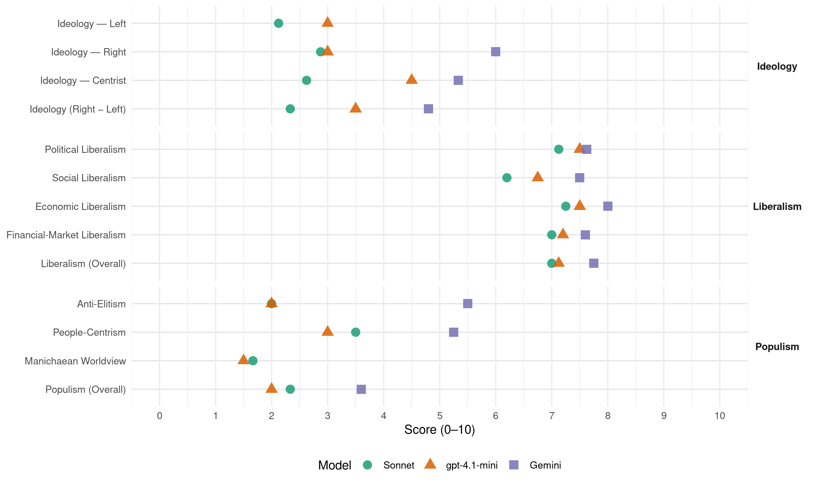

VMRO-DPMNE (North Macedonia, 2008)
manifesto_id 89710_200806
Get full text: This site shows derived annotations and short verbatim quotes only. The full manifesto text is © Manifesto Project / WZB — obtain it via manifesto-project.wzb.eu using the manifesto_id above.
Headline scores
| Dimension | Sonnet | gpt-4.1-mini | Gemini |
|---|---|---|---|
| Populism (Overall) | 2.3 | 2.0 | 3.6 |
| Anti-Elitism | 2.0 | 2.0 | 5.5 |
| People-Centrism | 3.5 | 3.0 | 5.2 |
| Manichaean Worldview | 1.7 | 1.5 | – |
| Ideology (Right − Left) | 2.3 | 3.5 | 4.8 |
| Liberalism (Overall) | 7.0 | 7.1 | 7.8 |
| Political Liberalism | 7.1 | 7.5 | 7.6 |
| Social Liberalism | 6.2 | 6.8 | 7.5 |
| Economic Liberalism | 7.2 | 7.5 | 8.0 |
| Financial-Market Liberalism | 7.0 | 7.2 | 7.6 |
Evidence per dimension
Economic Liberalism
Gemini · score 9.0 · verified · chunk 1
“посветена на економската слобода”
ВМРО-ДПМНЕ останува целосно посветена на економската слобода. ВМРО-ДПМНЕ се залага
Gemini · score 9.0 · verified · chunk 2
“слободна економија без бариери, во која функционира”
најповолна средина за развој на секторот на мали и средни претпријатија е економија без бариери, во која функционира систем на соработка и вмрежување
Gemini · score 9.0 · verified · chunk 3
“економија без бариери”
развој на секторот на мали и средни претпријатија е економија без бариери, во која функционира систем
Gemini · score 8.0 · verified · chunk 4
“либерализацијата на сите енергетски пазари во државата”
Заради тоа, како и до сега, ќе инсистираме на либерализацијата на сите енергетски пазари во државата врз начелата на објективност, транспарентност
Gemini · score 7.0 · verified · chunk 5
“развој на функционален пазар за продажба”
домашната и странските пазари преку: развој на функционален пазар за продажба и закуп на
Gemini · score 8.0 · verified · chunk 6
“промовира слободата и слободната економија”
сојузништва со демократските земји, да ја промовира слободата и слободната економија, да ги зацврстува сегашните сојузништва
Gemini · score 8.0 · verified · chunk 7
“да ја промовира слободата и слободната економија”
сојузништва со демократските земји, да ја промовира слободата и слободната економија, да ги зацврстува
Gemini · score 6.0 · verified · chunk 8
“систем на продажба на земјиштето за деловен”
народен театар - театар Центар, преку систем на продажба на земјиштето за деловен центар, во чија цена ќе биде вградена
gpt-4.1-mini · score 8.0 · verified · chunk 1
“ВМРО-ДПМНЕ останува целосно посветена на економската слобода”
ВМРО-ДПМНЕ останува целосно посветена на економската слобода. ВМРО-ДПМНЕ се залага за ослободување на креативниот потенцијал на секој поединец. ВМРО-ДПМНЕ верува дека државата треба само ги дефинира условите за игра на рамноправен начин, со цел да дојдат до израз креативноста, знаењето и претприемничкиот дух на секој човек.
gpt-4.1-mini · score 9.0 · verified · chunk 2
“рамен данок од 10%”
…Постојниот рамен данок од 10% е најнизок во Европа и истовремено наједноставен за примена…
gpt-4.1-mini · score 8.0 · verified · chunk 3
“Регулаторната гилотина”
…Политиката на ниски и едноставни даноци, брзата и едноставна регистрација на фирма, поедноставената регулатива и намалените трошоци за фирмите за административни документи спроведени со Регулаторната гилотина и олеснетиот пристап до финансиски средства, се основните фактори што го поттикнаа развојот на претприемништвото и на малите и средни бизниси во изминатите две години…
gpt-4.1-mini · score 8.0 · verified · chunk 4
“проектот за Регулаторна гилотина, кој го спроведовме е еден од најважните за подобрување на бизнис-климата”
Проектот за Регулаторна гилотина, кој го спроведовме е еден од најважните за подобрување на бизнис-климата. ИТ-технологијата има важна улога за успешно спроведување на регулаторните реформи преку поедноставување на административните процедури и развој на напредни двонасочни економични услуги.
gpt-4.1-mini · score 7.0 · verified · chunk 5
“зголемување на финансиската поддршка за земјоделството во вид на субвенции”
Постигнувањето на целите и приоритетите во периодот 2008-2012 подразбира натамошно зголемување на финансиската поддршка за земјоделството во вид на субвенции. Ние продолжуваме понатаму. ВМРО-ДПМНЕ ветува дека и натаму значително ќе ја зголемува поддршката за земјоделството.
gpt-4.1-mini · score 7.0 · verified · chunk 6
“зајакнување на општата деловна клима со дополнително подобрување на владеењето на правото”
Намалување на пречките за создавање нови работни места со посебно внимание на младите и лицата што се невработени подолг период; зајакнување на општата деловна клима со дополнително подобрување на владеењето на правото, независноста на регулаторните и надзорни тела, забрзување на правните постапки и продолжување на регистрацијата на имотните права.
gpt-4.1-mini · score 7.0 · verified · chunk 7
“зајакнување на општата деловна клима со дополнително подобрување на владеењето на правото”
Намалување на пречките за создавање нови работни места со посебно внимание на младите и лицата што се невработени подолг период; зајакнување на општата деловна клима со дополнително подобрување на владеењето на правото, независноста на регулаторните и надзорни тела, забрзување на правните постапки и продолжување на регистрацијата на имотните права . ВМРО-ДПМНЕ ќе работи интензивно на исполнувањето на критериумите и реформите за полноправно членство на Република Македонија во ЕУ.
gpt-4.1-mini · score 6.0 · verified · chunk 8
“Ставање на културата во функција на општиот економски и општествен развој”
Реставрација, конзервација и промоција на културното наследство; Ставање на културата во функција на општиот економски и општествен развој; Развивање на културниот, археолошкиот и амбиенталниот туризам како една од најголемите можности за промоција на културата во Република Македонија и обезбедување на дополнителни приходи; Поттикнување и развој на културата на локално ниво;
Sonnet · score 9.0 · verified · chunk 1
“целосно посветена на економската слобода”
ВМРО-ДПМНЕ останува целосно посветена на економската слобода. ВМРО-ДПМНЕ се залага за ослободување на креативниот потенцијал
Sonnet · score 9.0 · verified · chunk 2
“ги намали даноците на најниско ниво во Европа”
Даночна политика ВМРО-ДПМНЕ ги намали даноците на најниско ниво во Европа! Ниските даноци ги стимулираат инвестициите и економскиот раст.
Sonnet · score 8.0 · verified · chunk 3
“ниски и едноставни даноци, брзата и едноставна регистрација”
Политиката на ниски и едноставни даноци, брзата и едноставна регистрација на фирма, поедноставената регулатива
Sonnet · score 7.0 · verified · chunk 4
“либерализацијата на сите енергетски пазари”
ќе инсистираме на либерализацијата на сите енергетски пазари во државата врз начелата на објективност, транспарентност и недискриминаторен пристап во конкурентски услови
Sonnet · score 6.0 · verified · chunk 5
“конкурентен и ќе придонесува за економскиот развој”
Изградба на ефикасен земјоделски сектор кој ќе биде конкурентен и ќе придонесува за економскиот развој
Sonnet · score 7.0 · verified · chunk 6
“да ја промовира слободата и слободната економија”
ќе продолжи да гради нови сојузништва со демократските земји, да ја промовира слободата и слободната економија
Sonnet · score 7.0 · verified · chunk 7
“слободната економија”
Под водство на ВМРО-ДПМНЕ Република Македонија ќе продолжи да гради нови сојузништва со демократските земји, да ја промовира слободата и слободната економија, да ги зацврстува сегашните сојузништва
Sonnet · score 5.0 · verified · chunk 8
“охрабрување на зголемување на домашните и на странските комерцијални инвестиции”
градење мрежи помеѓу јавниот и приватниот сектор и охрабрување на зголемување на домашните и на странските комерцијални инвестиции
Financial-Market Liberalism
Gemini · score 8.0 · verified · chunk 1
“развој на пазарот на капитал”
кои ќе придонесат за уште побрз развој на пазарот на капитал . Македонската берза во
Gemini · score 9.0 · verified · chunk 2
“либерализација на девизното работење заради негово”
развој и развој. Ќе работиме на натамошна либерализација на девизното работење заради негово усогласување со стандардите на ЕУ, вклучително
Gemini · score 8.0 · verified · chunk 3
“инвестициски еквити-фондови”
Владата на ВМРО ДПМНЕ ќе поддржи формирање на инвестициски еквити-фондови. Постоењето на вакви
Gemini · score 7.0 · verified · chunk 4
“купување на нови компјутери со поволни кредити”
Владата на ВМРО ДПМНЕ во соработка со локалните банки и локалните фирми ќе им овозможи на граѓаните да купат нови компјутери со поволни кредити со ниски каматни стапки
Gemini · score 6.0 · verified · chunk 5
“Каматната стапка за крајните корисници”
преработка и извоз на земјоделски производи. Каматната стапка за крајните корисници на средствата од
gpt-4.1-mini · score 7.0 · verified · chunk 1
“Македонската берза во 2007 оствари најдобри резултати досега”
Македонската берза во 2007 оствари најдобри резултати досега: Вкупниот промет е зголемен за 182% во однос на 2006; Вкупната пазарна капитализација достигна речиси 5 милијарди евра, што е за 184% повеќе во однос на 2006; берзанскиот индекс МБИ-10 во 2007 оствари пораст од 109% во однос на2006; На почетокот на 2007 беше донесен закон за изменување и дополнување на законот за инвестициски фондови,
gpt-4.1-mini · score 9.0 · verified · chunk 2
“Кредитниот регистар”
…Формирање на приватно кредитно биро и подобрување на Кредитниот регистар…
gpt-4.1-mini · score 7.0 · verified · chunk 3
“еквити-фондови”
…Владата на ВМРО ДПМНЕ ќе поддржи формирање на инвестициски еквити-фондови. Постоењето на вакви фондови е значајно за развојот на економијата, бидејќи преку нив се врши докапитализација на малите и средни приватни претпријатија, коишто имаат потреба од капитал и know how…
gpt-4.1-mini · score 7.0 · verified · chunk 4
“реформи во Царинската управа, Управата за јавни приходи и во Државниот завод за статистика”
Со реформите во Царинската управа, Управата за јавни приходи и во Државниот завод за статистика ќе обезбедиме интерконекција и интероперабилност со релевантни административни тела на ЕУ, како што се системот DGTAXUD и EUROSTAT.
gpt-4.1-mini · score 6.0 · verified · chunk 6
“Донесовме нов закон за јавни набавки за потранспарентен систем на јавни набавки”
Донесовме нов закон за јавни набавки за потранспарентен систем на јавни набавки; Започнавме со електронски јавни набавки, со кои на најтранспарентен начин електронски се аплицира и се избира најповолен понудувач.
Sonnet · score 8.0 · verified · chunk 1
“пораст на банкарските кредити”
ќе овозможи да се одржи солидниот пораст на банкарските кредити од околу 35-40% годишно. Тоа е неопходно за да продолжи добрата кредитна поддршка
Sonnet · score 9.0 · verified · chunk 2
“либерализација на девизното работење заради негово усогласување”
Ќе работиме на натамошна либерализација на девизното работење заради негово усогласување со стандардите на ЕУ, вклучително и поедноставување на упатствата
Sonnet · score 7.0 · verified · chunk 3
“олеснет пристап до финансиски средства”
олеснетиот пристап до финансиски средства, се основните фактори што го поттикнаа развојот на претприемништвото
Sonnet · score 6.0 · verified · chunk 4
“поволни кредити со ниски каматни стапки”
ќе им овозможи на граѓаните да купат нови компјутери со поволни кредити со ниски каматни стапки, со исплаќање на 1 евро дневно
Sonnet · score 6.0 · verified · chunk 5
“Ја зголемивме конкуренцијата во областа на пензиските фондови”
Ја зголемивме конкуренцијата во областа на пензиските фондови со измени на законската рамка во насока на поттикнување на влезот на странски инвеститори
Sonnet · score 6.0 · verified · chunk 7
“Конкурентност и автономност”
Транспарентност, отчетност и одговорност пред локалните заедници во нивното работење; Конкурентност и автономност — referring to hospital autonomy and market mechanisms
Political Liberalism
Gemini · score 8.0 · verified · chunk 1
“ефикасно и независно судство”
решителна борба против корупцијата; Ефикасно и независно судство и ефикасно и неселективно
Gemini · score 8.0 · verified · chunk 2
“реализирани судски пресуди и неколкукратно е скратено”
за извршување и назначување на извршители значително се зголеми процентот на реализирани судски пресуди и неколкукратно е скратено времето за спроведување на извршувањето
Gemini · score 7.0 · verified · chunk 3
“законот за јавна чистота”
јавната чистота, меѓу другото и преку донесување на законот за јавна чистота, со кој се уредуваат условите
Gemini · score 7.0 · verified · chunk 4
“воспоставување и развивање на модерно и ефикасно правосудство”
Овие активности се дел од проектите што имаат за цел воспоставување и развивање на модерно и ефикасно правосудство во Македонија.
Gemini · score 8.0 · verified · chunk 5
“гарантираат владеењето на правото и почитувањето”
демократски институции и усвојување на инструментите кои го гарантираат владеењето на правото и почитувањето на фундаменталните
Gemini · score 8.0 · verified · chunk 6
“гарантираат владеењето на правото и почитувањето”
демократски институции и усвојување на инструментите кои го гарантираат владеењето на правото и почитувањето на фундаменталните човекови права.
Gemini · score 8.0 · verified · chunk 7
“дополнително подобрување на владеењето на правото”
општата деловна клима со дополнително подобрување на владеењето на правото, независноста на регулаторните
Gemini · score 7.0 · verified · chunk 8
“сместен Уставниот суд и Државниот архив”
рамките на истиот објект ќе биде сместен Уставниот суд и Државниот архив на Македонија (рок 2012 година);
gpt-4.1-mini · score 7.0 · verified · chunk 1
“Изготвен е закон за судска служба, со кој за прв пат се регулира прашањето на судската администрација”
Извршена е реорганизација на основните судови во Скопје, а во основниот суд Скопје I формирано е специјализирано одделение за постапување по предмети од организиран криминал; Изготвен е закон за судска служба, со кој за прв пат се регулира прашањето на судската администрација; Донесен е Правилник за оценување и следење на работата на судиите, и јакнење на одговорноста за извршување на судската функција; Започна со работа академијата за обука на судиите и обвинителите;
gpt-4.1-mini · score 8.0 · verified · chunk 2
“демократија”
…воспоставивме уникатна институционална архитектура за привлекување странски инвестиции… демократски институции и владеење на право…
gpt-4.1-mini · score 7.0 · verified · chunk 3
“демократија”
…ќе се воведе дигиталната телевизија, која ќе треба да обезбеди минимална покриеност на домаќинствата од 80% и локализација на македонскиот јазик за период од една година, како и задолжителен пренос на постојните национални електронски медиуми. Со воведувањето на дигиталната телевизија, Република Македонија ќе направи огромен исчекор на полето на современите технологии, овозможувајќи беспрекорен аудиовизуелен пренос за македонските граѓани. …
gpt-4.1-mini · score 8.0 · verified · chunk 4
“воведување на е-Владеење на локално ниво”
Го воведуваме проектот е-Владеење на локално ниво кој е особено значаен за тековните реформи на децентрализација. Овој проект обезбедува поддршка за новите надлежности и одговорности на општините со цел подобрување на ефикасноста и квалитетот на услуги кои тие ги нудат.
gpt-4.1-mini · score 8.0 · verified · chunk 5
“воспоставување стабилни демократски институции и усвојување на инструментите кои го гарантираат владеењето на правото”
Основна цел на Владата на ВМРО-ДПМНЕ е воспоставување стабилни демократски институции и усвојување на инструментите кои го гарантираат владеењето на правото и почитувањето на фундаменталните човекови права. Наша стратешка определба е професионална, деполитизирана, ефикасна, одговорна и сервисно ориентирана администрација.
gpt-4.1-mini · score 8.0 · verified · chunk 6
“воспоставување стабилни демократски институции и усвојување на инструментите кои го гарантираат владеењето на правото”
Основна цел на Владата на ВМРО-ДПМНЕ е воспоставување стабилни демократски институции и усвојување на инструментите кои го гарантираат владеењето на правото и почитувањето на фундаменталните човекови права.
gpt-4.1-mini · score 8.0 · verified · chunk 7
“заокружување на реформите во обвинителството и назначувањата во Судскиот совет”
на независноста и целокупниот капацитет во правосудниот систем, заокружување на реформите во обвинителството и назначувањата во Судскиот совет; континуирани резултати во спроведување на законодавството во областа на антикорупцијата; зајакнување на системот на напредување во кариерата заснован на заслуги на државните службеници и целосно спроведување на законот за државни службеници; Намалување на пречките за создавање нови работни места со посебно внимание на младите и лицата што се невработени подолг период; зајакнување на општата деловна клима со дополнително подобрување на владеењето на правото, независноста на регулаторните и надзорни тела, забрзување на правните постапки и продолжување на регистрацијата на имотните права . ВМРО-ДПМНЕ ќе работи интензивно на исполнувањето на критериумите и реформите за полноправно членство на Република Македонија во ЕУ.
gpt-4.1-mini · score 6.0 · verified · chunk 8
“Уставниот суд и Државниот архив на Македонија”
Изградба на нов Археолошки музеј во Скопје на кејот на р. Вардар. Во рамките на истиот објект ќе биде сместен Уставниот суд и Државниот архив на Македонија (рок 2012 година); Реновирање на Универзалната сала во Скопје (рок 2012 година); Проекти од областа на Заштита на културното наследство:
Sonnet · score 8.0 · verified · chunk 1
“Ефикасно и независно судство”
Ефикасно и независно судство и ефикасно и неселективно спроведување на правото; Поздрава нација
Sonnet · score 7.0 · verified · chunk 2
“бескомпромисна борба против корупцијата и организираниот криминал”
Водиме бескомпромисна борба против корупцијата и организираниот криминал, кои се големи непријатели на бизнисот и во минатото ги одвраќаа инвеститорите
Sonnet · score 7.0 · verified · chunk 3
“транспарентна тендерска постапка ќе избере инвеститор”
преку конкурентна и транспарентна тендерска постапка ќе избере инвеститор за имплементација
Sonnet · score 7.0 · verified · chunk 4
“транспарентност на набавките”
Крајната цел е човечкиот фактор при одлучувањето да биде минимизиран, што ќе придонесе за транспарентност на набавките и заштеда на финансиски средства
Sonnet · score 7.0 · verified · chunk 5
“владеењето на правото и почитувањето на фундаменталните човекови права”
воспоставување стабилни демократски институции и усвојување на инструментите кои го гарантираат владеењето на правото и почитувањето на фундаменталните човекови права
Sonnet · score 8.0 · verified · chunk 6
“воспоставување стабилни демократски институции”
Основна цел на Владата на ВМРО-ДПМНЕ е воспоставување стабилни демократски институции и усвојување на инструментите кои го гарантираат владеењето на правото
Sonnet · score 7.0 · verified · chunk 7
“независноста на регулаторните и надзорни тела”
зајакнување на општата деловна клима со дополнително подобрување на владеењето на правото, независноста на регулаторните и надзорни тела, забрзување на правните постапки
Sonnet · score 6.0 · verified · chunk 8
“учеството на јавноста во донесување одлуки”
Ќе го поддржуваме учеството на јавноста во донесување одлуки за контрола на квалитетот на амбиенталниот воздух
Liberalism (Overall)
Gemini · score 8.0 · verified · chunk 1
“посветена на економската слобода”
ВМРО-ДПМНЕ останува целосно посветена на економската слобода. ВМРО-ДПМНЕ се залага
Gemini · score 9.0 · verified · chunk 2
“слободна економија без бариери, во која функционира”
најповолна средина за развој на секторот на мали и средни претпријатија е економија без бариери, во која функционира систем на соработка и вмрежување
Gemini · score 8.0 · verified · chunk 3
“економија без бариери”
развој на секторот на мали и средни претпријатија е економија без бариери, во која функционира систем
Gemini · score 7.0 · verified · chunk 4
“либерализацијата на сите енергетски пазари во државата”
Заради тоа, како и до сега, ќе инсистираме на либерализацијата на сите енергетски пазари во државата врз начелата на објективност, транспарентност
Gemini · score 7.0 · verified · chunk 5
“гарантираат владеењето на правото и почитувањето”
демократски институции и усвојување на инструментите кои го гарантираат владеењето на правото и почитувањето на фундаменталните
Gemini · score 8.0 · verified · chunk 6
“гарантираат владеењето на правото и почитувањето”
демократски институции и усвојување на инструментите кои го гарантираат владеењето на правото и почитувањето на фундаменталните човекови права.
Gemini · score 8.0 · verified · chunk 7
“да ја промовира слободата и слободната економија”
сојузништва со демократските земји, да ја промовира слободата и слободната економија, да ги зацврстува
Gemini · score 7.0 · verified · chunk 8
“нема да дозволиме дискриминација во однос”
првите три обиди. Притоа, нема да дозволиме дискриминација во однос на возраст, пол и раса на брачните двојки.
gpt-4.1-mini · score 7.0 · verified · chunk 1
“ВМРО-ДПМНЕ останува целосно посветена на економската слобода”
ВМРО-ДПМНЕ останува целосно посветена на економската слобода. ВМРО-ДПМНЕ се залага за ослободување на креативниот потенцијал на секој поединец. ВМРО-ДПМНЕ верува дека државата треба само ги дефинира условите за игра на рамноправен начин, со цел да дојдат до израз креативноста, знаењето и претприемничкиот дух на секој човек.
gpt-4.1-mini · score 8.0 · verified · chunk 2
“рамен данок од 10%”
…Постојниот рамен данок од 10% е најнизок во Европа и истовремено наједноставен за примена…
gpt-4.1-mini · score 7.0 · verified · chunk 3
“Политиката на ниски и едноставни даноци”
…Политиката на ниски и едноставни даноци, брзата и едноставна регистрација на фирма, поедноставената регулатива и намалените трошоци за фирмите за административни документи спроведени со Регулаторната гилотина и олеснетиот пристап до финансиски средства, се основните фактори што го поттикнаа развојот на претприемништвото и на малите и средни бизниси во изминатите две години…
gpt-4.1-mini · score 8.0 · verified · chunk 4
“проектот за Регулаторна гилотина, кој го спроведовме е еден од најважните за подобрување на бизнис-климата”
Проектот за Регулаторна гилотина, кој го спроведовме е еден од најважните за подобрување на бизнис-климата. ИТ-технологијата има важна улога за успешно спроведување на регулаторните реформи преку поедноставување на административните процедури и развој на напредни двонасочни економични услуги.
gpt-4.1-mini · score 7.0 · verified · chunk 5
“воспоставување стабилни демократски институции и усвојување на инструментите кои го гарантираат владеењето на правото”
Основна цел на Владата на ВМРО-ДПМНЕ е воспоставување стабилни демократски институции и усвојување на инструментите кои го гарантираат владеењето на правото и почитувањето на фундаменталните човекови права. Наша стратешка определба е професионална, деполитизирана, ефикасна, одговорна и сервисно ориентирана администрација.
gpt-4.1-mini · score 7.0 · verified · chunk 6
“воспоставување стабилни демократски институции и усвојување на инструментите кои го гарантираат владеењето на правото”
Основна цел на Владата на ВМРО-ДПМНЕ е воспоставување стабилни демократски институции и усвојување на инструментите кои го гарантираат владеењето на правото и почитувањето на фундаменталните човекови права.
gpt-4.1-mini · score 7.0 · verified · chunk 7
“зајакнување на општата деловна клима со дополнително подобрување на владеењето на правото”
Намалување на пречките за создавање нови работни места со посебно внимание на младите и лицата што се невработени подолг период; зајакнување на општата деловна клима со дополнително подобрување на владеењето на правото, независноста на регулаторните и надзорни тела, забрзување на правните постапки и продолжување на регистрацијата на имотните права . ВМРО-ДПМНЕ ќе работи интензивно на исполнувањето на критериумите и реформите за полноправно членство на Република Македонија во ЕУ.
gpt-4.1-mini · score 6.0 · verified · chunk 8
“Ставање на културата во функција на општиот економски и општествен развој”
Реставрација, конзервација и промоција на културното наследство; Ставање на културата во функција на општиот економски и општествен развој; Развивање на културниот, археолошкиот и амбиенталниот туризам како една од најголемите можности за промоција на културата во Република Македонија и обезбедување на дополнителни приходи; Поттикнување и развој на културата на локално ниво;
Sonnet · score 8.0 · verified · chunk 1
“целосно посветена на економската слобода”
ВМРО-ДПМНЕ останува целосно посветена на економската слобода. ВМРО-ДПМНЕ се залага за ослободување на креативниот потенцијал
Sonnet · score 8.0 · verified · chunk 2
“ги намали даноците на најниско ниво во Европа”
Даночна политика ВМРО-ДПМНЕ ги намали даноците на најниско ниво во Европа! Ниските даноци ги стимулираат инвестициите и економскиот раст.
Sonnet · score 7.0 · verified · chunk 3
“целосна либерализација на телефонијата”
а со цел исполнување на европските критериуми и целосна либерализација на телефонијата
Sonnet · score 7.0 · verified · chunk 4
“либерализацијата на сите енергетски пазари”
ќе инсистираме на либерализацијата на сите енергетски пазари во државата врз начелата на објективност, транспарентност и недискриминаторен пристап во конкурентски услови
Sonnet · score 6.0 · verified · chunk 5
“владеењето на правото и почитувањето на фундаменталните човекови права”
воспоставување стабилни демократски институции и усвојување на инструментите кои го гарантираат владеењето на правото и почитувањето на фундаменталните човекови права
Sonnet · score 7.0 · verified · chunk 6
“владеење на правото и почитување на фундаменталните човекови права”
инструментите кои го гарантираат владеењето на правото и почитувањето на фундаменталните човекови права
Sonnet · score 7.0 · verified · chunk 7
“владеењето на правото, независноста на регулаторните”
зајакнување на општата деловна клима со дополнително подобрување на владеењето на правото, независноста на регулаторните и надзорни тела
Sonnet · score 6.0 · verified · chunk 8
“охрабрување на зголемување на домашните и на странските комерцијални инвестиции”
градење мрежи помеѓу јавниот и приватниот сектор и охрабрување на зголемување на домашните и на странските комерцијални инвестиции
Anti-Elitism
Gemini · score 5.0 · verified · chunk 1
“криминогените транзициски профитери”
неплаќачите на данок и на криминогените транзициски профитери. Затоа што добро знаеме
Gemini · score 5.0 · verified · chunk 4
“основни алатки во борбата против корупцијата”
Е-оданочување, Е-социјален придонес, Е-набавки – се проекти кои обезбедуваат современи владини услуги преку електронска интерактивност со владата и се основни алатки во борбата против корупцијата и бирократијата.
Gemini · score 6.0 · verified · chunk 5
“Владата на СДСМ не им ги исплаќаше”
водостопанствата кои долги години Владата на СДСМ не им ги исплаќаше, со што не можеше
Gemini · score 6.0 · verified · chunk 7
“силна борба против фармацевтската мафија”
ВМРО-ДПМНЕ решително влезе во силна борба против фармацевтската мафија и т.н. бела мафија
gpt-4.1-mini · score 2.0 · verified · chunk 1
“политика на „нулта-толеранција“ за спречување и откривање на сите форми на корупција”
Отворена е бесплатна телефонска линија за пријавување корупциски случаи; Политика на „нулта-толеранција“ за спречување и откривање на сите форми на корупција и организиран криминал; Македонија е подобро рангирана за 21 позиција во борбата против корупцијата на листата на Transparency International;
gpt-4.1-mini · score 2.0 · verified · chunk 6
“неселективна борба против криминалот и нултата-толеранција за корупцијата”
Бескомпромисната и неселективна борба против криминалот и нултата-толеранција за корупцијата станаа знак на препознавање на работењето на владата на ВМРО-ДПМНЕ.
Sonnet · score 2.0 · mixed · chunk 1
“криминогените транзициски профитери”
ние не им прогледуваме низ прсти на неплаќачите на данок и на криминогените транзициски профитери. Затоа што добро знаеме
Sonnet · score 2.0 · mixed · chunk 2
“нашите претходници заради лични интереси овозможуваа монопол”
Ги либерализиравме телекомуникациските услуги, во кои нашите претходници заради лични интереси овозможуваа монопол чија цена ја плаќаа граѓаните
Sonnet · score 1.0 · verified · chunk 3
“елиминирање на човечкиот фактор во процесот”
висок степен на транспарентност при распределбата и елиминирање на човечкиот фактор во процесот на одлучување
Sonnet · score 3.0 · mixed · chunk 4
“беше зголемена претходно од Владата на СДСМ”
стапка која беше зголемена претходно од Владата на СДСМ и го обремени буџетот на земјоделецот со зголемени трошоци
Sonnet · score 3.0 · verified · chunk 5
“Владата на СДСМ не им ги исплаќаше”
Ги исплативме платите во водостопанствата кои долги години Владата на СДСМ не им ги исплаќаше, со што не можеше да се заокружи процесот на трансформација
Sonnet · score 2.0 · verified · chunk 6
“нулта-толеранција за корупцијата”
решителна борба против организираниот криминал и нулта-толеранција за корупцијата, следејќи ја нашата визија
Sonnet · score 3.0 · verified · chunk 7
“борба против фармацевтската мафија и т.н. бела мафија”
ВМРО-ДПМНЕ решително влезе во силна борба против фармацевтската мафија и т.н. бела мафија, која имаше изградено силна финансиска моќ и влијание за време на владеењето на СДСМ
Sonnet · score 1.0 · verified · chunk 8
“ја исправивме неправдата нанесена на спортистите”
Во 2007 година ја исправивме неправдата нанесена на спортистите што беа оставени на цедило без нивната заслужена стипендија
Ideology — Centrist
Gemini · score 5.0 · verified · chunk 1
“криминогените транзициски профитери”
неплаќачите на данок и на криминогените транзициски профитери. Затоа што добро знаеме
Gemini · score 6.0 · verified · chunk 4
“ВМРО-ДМПНЕ ја насочи целокупната енергија кон подигнување на земјоделството”
ВМРО-ДМПНЕ ја насочи целокупната енергија кон подигнување на земјоделството и закрепнување на стандардот на земјоделецот.
Gemini · score 5.0 · verified · chunk 5
“Никој повеќе нема да може да го потценува”
за земјоделците од 2008 до 2012 година! Никој повеќе нема да може да го потценува трудот на земјоделците!
gpt-4.1-mini · score 4.0 · verified · chunk 1
“ВМРО-ДПМНЕ е партија на идеи! ВМРО-ДПМНЕ е партија на проекти! ВМРО-ДПМНЕ е партија што остварува!”
ВМРО-ДПМНЕ е партија на идеи! ВМРО-ДПМНЕ е партија на проекти! ВМРО-ДПМНЕ е партија што остварува! ВМРО-ДПМНЕ е партија што има квалитетни идеи. ВМРО-ДПМНЕ е партија што реализира квалитетни проекти. Токму такви, конкретни проекти реализирани со конкретна одговорност на луѓе со име и презиме за нивната реализација,
gpt-4.1-mini · score 5.0 · verified · chunk 6
“владеење на правото и почитувањето на фундаменталните човекови права”
Основна цел на Владата на ВМРО-ДПМНЕ е воспоставување стабилни демократски институции и усвојување на инструментите кои го гарантираат владеењето на правото и почитувањето на фундаменталните човекови права.
Sonnet · score 2.0 · verified · chunk 1
“ВМРО-ДПМНЕ е партија на идеи”
ВМРО-ДПМНЕ е партија на идеи! ВМРО-ДПМНЕ е партија на проекти! ВМРО-ДПМНЕ е партија што остварува!
Sonnet · score 2.0 · verified · chunk 2
“ВМРО-ДПМНЕ е пријател на инвеститорите”
ВМРО-ДПМНЕ докажа дека е пријател на инвеститорите. За домашните инвеститори, ги спуштивме даноците на најниско ниво во Европа
Sonnet · score 3.0 · verified · chunk 3
“ВМРО-ДПМНЕ е пријател на малите”
ВМРО-ДПМНЕ е пријател на малите и средни претпријатија. Политиката на ниски и едноставни даноци
Sonnet · score 4.0 · verified · chunk 4
“сите граѓани на Македонија”
Владата ќе обезбеди бесплатен интернет за сите граѓани на Македонија во траење од шест недели
Sonnet · score 4.0 · verified · chunk 5
“баланс на политиките насочени кон економскиот развој”
ВМРО-ДПМНЕ е одговорна партија која знае како да оствари баланс на политиките насочени кон економскиот развој и социјалната правда
Sonnet · score 2.0 · verified · chunk 6
“одговорна и народна партија”
ВМРО-ДПМНЕ како одговорна и народна партија, нема да дозволи какво било решение
Sonnet · score 2.0 · verified · chunk 7
“слободата и слободната економија”
Под водство на ВМРО-ДПМНЕ Република Македонија ќе продолжи да гради нови сојузништва со демократските земји, да ја промовира слободата и слободната економија
Sonnet · score 2.0 · verified · chunk 8
“поквалитетен живот за сите”
7. ПОКВАЛИТЕТЕН ЖИВОТ ЗА СИТЕ — generic inclusive framing without strong programmatic left/right content
Ideology — Left
gpt-4.1-mini · score 3.0 · verified · chunk 1
“зголемување на платите и пензиите”
Кога е ВМРО-ДПМНЕ на власт, има пари во буџетот за зголемување на платите и пензиите. Иако не ветивме пред изборите, со домаќинско прибирање на приходите и рационалност во трошењето на буџетските средства, создадовме простор за да ги зголемиме платите и пензиите.
gpt-4.1-mini · score 3.0 · verified · chunk 6
“зајакнување на општата деловна клима со дополнително подобрување на владеењето на правото”
Намалување на пречките за создавање нови работни места со посебно внимание на младите и лицата што се невработени подолг период; зајакнување на општата деловна клима со дополнително подобрување на владеењето на правото, независноста на регулаторните и надзорни тела, забрзување на правните постапки и продолжување на регистрацијата на имотните права.
Sonnet · score 2.0 · verified · chunk 1
“субвенции за земјоделците”
собраните даночни приходи значат повеќе субвенции за земјоделците, повеќе компјутери за учениците, поевтини лекови
Sonnet · score 1.0 · verified · chunk 2
“ќе гарантираат основните работнички права”
Соработка со социјалните партнери за остварување баланс, со кој истовремено ќе се стимулира вработувањето и ќе се гарантираат основните работнички права
Sonnet · score 2.0 · verified · chunk 3
“социјално загрозени категории на граѓани”
за решавање на станбеното прашање на социјално загрозени категории на граѓани
Sonnet · score 3.0 · verified · chunk 4
“субвенции за земјоделците”
Во првите две години од нашиот мандат, за земјоделството издвоивме вкупно 90 милиони евра — Големи субвенции за земјоделците
Sonnet · score 4.0 · verified · chunk 5
“социјална кохезија и социјална правда”
ВМРО-ДПМНЕ знае дека долгорочно одржлив економски развој не е можен без повисок степен на социјална кохезија и социјална правда
Sonnet · score 1.0 · verified · chunk 6
“Намалување на пречките за создавање нови работни места”
Намалување на пречките за создавање нови работни места со посебно внимание на младите и лицата што се невработени подолг период
Sonnet · score 2.0 · verified · chunk 7
“принципите на солидарност, правичност и ефикасност”
Распределбата на средствата во здравствениот систем ќе продолжиме да ја реализираме преку почитување на принципите на солидарност, правичност и ефикасност
Sonnet · score 2.0 · verified · chunk 8
“нема да дозволиме дискриминација во однос на возраст, пол и раса”
Притоа, нема да дозволиме дискриминација во однос на возраст, пол и раса на брачните двојки
Ideology (Right − Left)
Gemini · score 5.0 · verified · chunk 1
“криминогените транзициски профитери”
неплаќачите на данок и на криминогените транзициски профитери. Затоа што добро знаеме
Gemini · score 5.0 · verified · chunk 4
“ВМРО-ДПМНЕ е земјоделска партија”
Македонија е земјоделска земја! ВМРО-ДПМНЕ е земјоделска партија! Владата на ВМРО-ДПМНЕ е земјоделска влада!
Gemini · score 4.0 · verified · chunk 5
“Никој повеќе нема да може да го потценува”
за земјоделците од 2008 до 2012 година! Никој повеќе нема да може да го потценува трудот на земјоделците!
Gemini · score 5.0 · verified · chunk 6
“македонскиот национален идентитет, македонската нација”
нема да прифати идеи и предлози што ќе го нарушат македонскиот национален идентитет, македонската нација и македонскиот јазик.
Gemini · score 5.0 · verified · chunk 7
“зачувување на македонскиот идентитет”
Во насока на зачувување на македонскиот идентитет и поддршка на македонците кои живеат
gpt-4.1-mini · score 3.0 · verified · chunk 1
“ВМРО-ДПМНЕ е партија на идеи! ВМРО-ДПМНЕ е партија на проекти! ВМРО-ДПМНЕ е партија што остварува!”
ВМРО-ДПМНЕ е партија на идеи! ВМРО-ДПМНЕ е партија на проекти! ВМРО-ДПМНЕ е партија што остварува! ВМРО-ДПМНЕ е партија што има квалитетни идеи. ВМРО-ДПМНЕ е партија што реализира квалитетни проекти. Токму такви, конкретни проекти реализирани со конкретна одговорност на луѓе со име и презиме за нивната реализација,
gpt-4.1-mini · score 4.0 · verified · chunk 6
“неселективна борба против криминалот и нултата-толеранција за корупцијата”
Бескомпромисната и неселективна борба против криминалот и нултата-толеранција за корупцијата станаа знак на препознавање на работењето на владата на ВМРО-ДПМНЕ.
Sonnet · score 2.0 · mixed · chunk 1
“традиционалните христијански вредности”
Поздрава нација што ги почитува традиционалните христијански вредности, вклучувајќи ги и вредностите на семејството
Sonnet · score 1.0 · verified · chunk 2
“нашите претходници заради лични интереси”
Ги либерализиравме телекомуникациските услуги, во кои нашите претходници заради лични интереси овозможуваа монопол чија цена ја плаќаа граѓаните
Sonnet · score 2.0 · verified · chunk 3
“пристоен живот за себе и за сопствените семејства”
вкупно 10.000 граѓани ќе обезбедат работа и пристоен живот за себе и за сопствените семејства
Sonnet · score 3.0 · mixed · chunk 4
“ВМРО-ДПМНЕ е земјоделска партија”
Македонија е земјоделска земја! ВМРО-ДПМНЕ е земјоделска партија! Владата на ВМРО-ДПМНЕ е земјоделска влада!
Sonnet · score 3.0 · verified · chunk 5
“социјална кохезија и социјална правда”
долгорочно одржлив економски развој не е можен без повисок степен на социјална кохезија и социјална правда
Sonnet · score 2.0 · verified · chunk 6
“народна партија”
ВМРО-ДПМНЕ како одговорна и народна партија, нема да дозволи какво било решение
Sonnet · score 3.0 · verified · chunk 7
“националните права на Македонците”
Посебно ќе се залагаме за почитување на малцинските и националните права на Македонците што живеат на територијата на нашите соседи
Sonnet · score 3.0 · verified · chunk 8
“националните културни вредности и интереси”
ВМРО-ДПМНЕ ќе ги сочува националните културни вредности и интереси, како оние што се дел од старата македонска традиција
Ideology — Right
Gemini · score 6.0 · verified · chunk 6
“македонскиот национален идентитет, македонската нација”
нема да прифати идеи и предлози што ќе го нарушат македонскиот национален идентитет, македонската нација и македонскиот јазик.
Gemini · score 6.0 · verified · chunk 7
“зачувување на македонскиот идентитет”
Во насока на зачувување на македонскиот идентитет и поддршка на македонците кои живеат
gpt-4.1-mini · score 2.0 · verified · chunk 1
“Промоција на македонскиот јазик, култура и идентитет во светот”
Клучните десет цели за перидот 2008-2012 година, се: … Промоција на македонскиот јазик, култура и идентитет во светот; Висок степен на сигурност и безбедност и решителна борба против корупцијата и криминалот;
gpt-4.1-mini · score 4.0 · verified · chunk 6
“заштита на националната безбедност и борба против тероризмот”
Врвен приоритет на Владата предводена од ВМРО-ДПМНЕ е безбедноста и стабилноста на Република Македонија. Во новиот мандат, Владата на ВМРО-ДПМНЕ ќе продолжи со јакнење на безбедносниот систем во правецот на развој на систем за национална безбедност.
Sonnet · score 3.0 · verified · chunk 1
“традиционалните христијански вредности”
Поздрава нација што ги почитува традиционалните христијански вредности, вклучувајќи ги и вредностите на семејството
Sonnet · score 2.0 · verified · chunk 2
“Македонија да се стекне со репутација”
Македонија да се стекне со репутација на земја во која инвеститорите добиваат многу високо ниво на професионална услуга.
Sonnet · score 2.0 · verified · chunk 3
“македонските промотори во целост”
Македонските промотори во целост се заменуваат со локални промотори
Sonnet · score 2.0 · verified · chunk 4
“суверенитетот на државата”
енергетскиот сектор да биде основна движечка сила на македонската економија и столб на суверенитетот на државата
Sonnet · score 3.0 · verified · chunk 5
“автохтоната сорта ориз и нејзино подобрување”
Одржување на автохтоната сорта ориз и нејзино подобрување како враќање на производството на ориз на претходното ниво на продуктивност
Sonnet · score 3.0 · verified · chunk 6
“спречувањето на нелегалната миграција”
зајакнувањето на контролата на државната граница и спречувањето на нелегалната миграција предизвика промена на вкупната безбедносна свест
Sonnet · score 4.0 · verified · chunk 7
“македонскиот идентитет и македонското историско наследство”
Ќе продолжиме да се грижиме за промоција на македонскиот јазик, македонската култура и идентитет и македонското историско наследство
Sonnet · score 4.0 · verified · chunk 8
“националните културни вредности и интереси”
ВМРО-ДПМНЕ ќе ги сочува националните културни вредности и интереси, како оние што се дел од старата македонска традиција
Manichaean Worldview
gpt-4.1-mini · score 1.0 · verified · chunk 1
“Политика на „нулта-толеранција“ за спречување и откривање на сите форми на корупција и организиран криминал”
Отворена е бесплатна телефонска линија за пријавување корупциски случаи; Политика на „нулта-толеранција“ за спречување и откривање на сите форми на корупција и организиран криминал; Македонија е подобро рангирана за 21 позиција во борбата против корупцијата на листата на Transparency International;
gpt-4.1-mini · score 2.0 · verified · chunk 6
“независно од неговата професија, политичка или каква било друга припадност ќе се соочи со правдата”
Останавме доследни на ветувањето дека секој за кого има основани сомненија дека го прекршил законот независно од неговата професија, политичка или каква било друга припадност ќе се соочи со правдата.
Sonnet · score 1.0 · verified · chunk 2
“нашите претходници заради лични интереси”
Ги либерализиравме телекомуникациските услуги, во кои нашите претходници заради лични интереси овозможуваа монопол чија цена ја плаќаа граѓаните и фирмите
Sonnet · score 1.0 · verified · chunk 3
“борбата против корупцијата и бирократијата”
се основни алатки во борбата против корупцијата и бирократијата
Sonnet · score 2.0 · mixed · chunk 4
“наспроти 4-5 милиони евра годишно во мандатот на СДСМ”
за земјоделството издвоивме вкупно 90 милиони евра, наспроти 4-5 милиони евра годишно во мандатот на СДСМ 2002-2006
Sonnet · score 2.0 · verified · chunk 5
“Никој нема да може да го намали износот”
Никој повеќе нема да може да го потценува трудот на земјоделците! Никој нема да може да го намали износот на државна поддршка за земјоделството!
Sonnet · score 2.0 · verified · chunk 6
“Бескомпромисната и неселективна борба против криминалот”
Бескомпромисната и неселективна борба против криминалот и нултата-толеранција за корупцијата станаа знак на препознавање
Sonnet · score 3.0 · verified · chunk 7
“корупции и скандали во здравството за време на СДСМ”
По многугодишната практика на корупции и скандали во здравството за време на СДСМ, ВМРО-ДПМНЕ решително влезе во силна борба против фармацевтската мафија
Sonnet · score 1.0 · verified · chunk 8
“неправдата нанесена на спортистите”
ја исправивме неправдата нанесена на спортистите што беа оставени на цедило без нивната заслужена стипендија
People-Centrism
Gemini · score 5.0 · verified · chunk 1
“заедно со македонските граѓани”
Со напорна работа, заедно со македонските граѓани. Економски политики Во следните
Gemini · score 6.0 · verified · chunk 4
“Владата ќе обезбеди бесплатен интернет за сите граѓани”
Во 2010 и 2011, Владата ќе обезбеди бесплатен интернет for сите граѓани во траење од шест недели, двапати годишно.
Gemini · score 5.0 · verified · chunk 5
“Никој повеќе нема да може да го потценува”
за земјоделците од 2008 до 2012 година! Никој повеќе нема да може да го потценува трудот на земјоделците!
Gemini · score 5.0 · verified · chunk 6
“ВМРО-ДПМНЕ како одговорна и народна партија”
македонската нација и македонскиот јазик. ВМРО-ДПМНЕ како одговорна и народна партија, нема да дозволи какво било решение
gpt-4.1-mini · score 3.0 · verified · chunk 1
“ВМРО-ДПМНЕ е партија на идеи! ВМРО-ДПМНЕ е партија на проекти! ВМРО-ДПМНЕ е партија што остварува!”
ВМРО-ДПМНЕ е партија на идеи! ВМРО-ДПМНЕ е партија на проекти! ВМРО-ДПМНЕ е партија што остварува! ВМРО-ДПМНЕ е партија што има квалитетни идеи. ВМРО-ДПМНЕ е партија што реализира квалитетни проекти. Токму такви, конкретни проекти реализирани со конкретна одговорност на луѓе со име и презиме за нивната реализација,
gpt-4.1-mini · score 3.0 · verified · chunk 6
“граѓаните избираат кој ќе раководи со државата, а власта одговара пред граѓаните”
1.2 Граѓаните избираат кој ќе раководи со државата, а власта одговара пред граѓаните Основна цел на Владата на ВМРО-ДПМНЕ е воспоставување стабилни демократски институции и усвојување на инструментите кои го гарантираат владеењето на правото и почитувањето на фундаменталните човекови права.
Sonnet · score 4.0 · verified · chunk 1
“да се почувствува кај сите граѓани”
економскиот развој да стане уште подинамичен. И да се почувствува кај сите граѓани. Само со одржлив и висок економски раст
Sonnet · score 3.0 · verified · chunk 2
“ќе го ослободи креативниот потенцијал на македонските претприемачи”
ВМРО-ДПМНЕ знае како да се создаде рамен терен за фер-игра. ВМРО-ДПМНЕ знае како да се ослободи креативниот потенцијал на македонските претприемачи.
Sonnet · score 3.0 · verified · chunk 3
“10.000 граѓани ќе обезбедат работа”
вкупно 10.000 граѓани ќе обезбедат работа и пристоен живот за себе и за сопствените семејства
Sonnet · score 4.0 · verified · chunk 4
“сите граѓани на Македонија”
ќе обезбедиме бесплатен интернет за сите граѓани на Македонија во траење од шест недели
Sonnet · score 4.0 · verified · chunk 5
“Никој повеќе нема да може да го потценува трудот на земјоделците”
Вкупно 460 милиони евра за земјоделците од 2008 до 2012 година! Никој повеќе нема да може да го потценува трудот на земјоделците!
Sonnet · score 3.0 · verified · chunk 6
“Граѓаните избираат кој ќе раководи”
1.2 Граѓаните избираат кој ќе раководи со државата, а власта одговара пред граѓаните
Sonnet · score 4.0 · verified · chunk 7
“сите граѓани ќе бидат рамноправни”
Постепено ќе создадеме подобар здравствен систем во кој сите граѓани ќе бидат рамноправни во нивните права и одговорности
Sonnet · score 3.0 · verified · chunk 8
“поквалитетен живот за сите”
7. ПОКВАЛИТЕТЕН ЖИВОТ ЗА СИТЕ — section heading framing policy as serving all citizens
Populism (Overall)
Gemini · score 5.0 · verified · chunk 1
“криминогените транзициски профитери”
неплаќачите на данок и на криминогените транзициски профитери. Затоа што добро знаеме
Gemini · score 4.0 · verified · chunk 4
“Владата на ВМРО-ДПМНЕ е земјоделска влада”
Македонија е земјоделска земја! ВМРО-ДПМНЕ е земјоделска партија! Владата на ВМРО-ДПМНЕ е земјоделска влада! И се гордееме со тоа.
Gemini · score 4.0 · verified · chunk 5
“Владата на СДСМ не им ги исплаќаше”
водостопанствата кои долги години Владата на СДСМ не им ги исплаќаше, со што не можеше
Gemini · score 2.0 · verified · chunk 6
“ВМРО-ДПМНЕ како одговорна и народна партија”
македонската нација и македонскиот јазик. ВМРО-ДПМНЕ како одговорна и народна партија, нема да дозволи какво било решение
Gemini · score 3.0 · verified · chunk 7
“силна борба против фармацевтската мафија”
ВМРО-ДПМНЕ решително влезе во силна борба против фармацевтската мафија и т.н. бела мафија
gpt-4.1-mini · score 2.0 · verified · chunk 1
“Политика на „нулта-толеранција“ за спречување и откривање на сите форми на корупција и организиран криминал”
Отворена е бесплатна телефонска линија за пријавување корупциски случаи; Политика на „нулта-толеранција“ за спречување и откривање на сите форми на корупција и организиран криминал; Македонија е подобро рангирана за 21 позиција во борбата против корупцијата на листата на Transparency International;
gpt-4.1-mini · score 2.0 · verified · chunk 6
“неселективна борба против криминалот и нултата-толеранција за корупцијата”
Бескомпромисната и неселективна борба против криминалот и нултата-толеранција за корупцијата станаа знак на препознавање на работењето на владата на ВМРО-ДПМНЕ.
Sonnet · score 2.0 · mixed · chunk 1
“криминогените транзициски профитери”
ние не им прогледуваме низ прсти на неплаќачите на данок и на криминогените транзициски профитери
Sonnet · score 2.0 · verified · chunk 2
“нашите претходници заради лични интереси овозможуваа монопол”
Ги либерализиравме телекомуникациските услуги, во кои нашите претходници заради лични интереси овозможуваа монопол чија цена ја плаќаа граѓаните
Sonnet · score 2.0 · verified · chunk 3
“ВМРО-ДПМНЕ е пријател на малите”
ВМРО-ДПМНЕ е пријател на малите и средни претпријатија
Sonnet · score 3.0 · mixed · chunk 4
“беше зголемена претходно од Владата на СДСМ”
стапка која беше зголемена претходно од Владата на СДСМ и го обремени буџетот на земјоделецот со зголемени трошоци
Sonnet · score 3.0 · verified · chunk 5
“Владата на СДСМ не им ги исплаќаше”
Ги исплативме платите во водостопанствата кои долги години Владата на СДСМ не им ги исплаќаше
Sonnet · score 2.0 · verified · chunk 6
“власта одговара пред граѓаните”
Граѓаните избираат кој ќе раководи со државата, а власта одговара пред граѓаните
Sonnet · score 3.0 · verified · chunk 7
“борба против фармацевтската мафија”
ВМРО-ДПМНЕ решително влезе во силна борба против фармацевтската мафија и т.н. бела мафија, која имаше изградено силна финансиска моќ
Sonnet · score 2.0 · verified · chunk 8
“поквалитетен живот за сите”
7. ПОКВАЛИТЕТЕН ЖИВОТ ЗА СИТЕ — overarching framing of policy programme
Social Liberalism